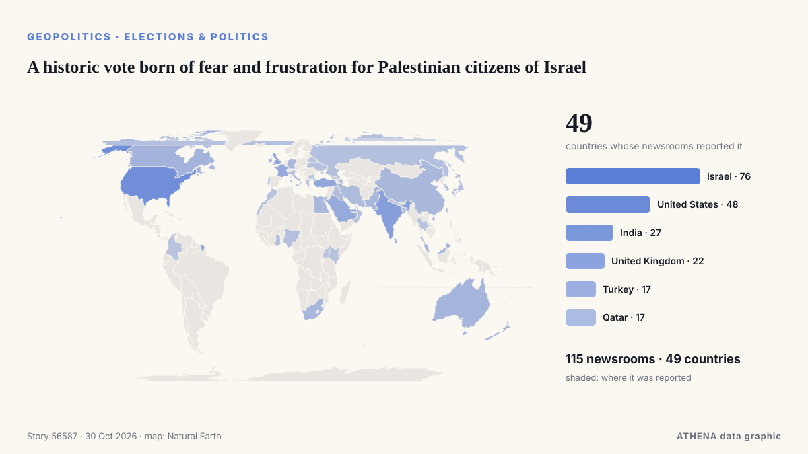

Εκλογές & πολιτική
| 18 Οκτ | 1 |
|---|---|
| 19 Οκτ | 0 |
| 20 Οκτ | 1 |
| 21 Οκτ | 0 |
| 22 Οκτ | 3 |
| 23 Οκτ | 3 |
| 24 Οκτ | 2 |
| 25 Οκτ | 2 |
| 26 Οκτ | 5 |
| 27 Οκτ | 6 |
| 28 Οκτ | 1 |
| 29 Οκτ | 0 |
| 30 Οκτ | 0 |
| 31 Οκτ | 0 |
Οι τίτλοι των ειδήσεων παρουσιάζονται στα αγγλικά, όπως δημοσιεύτηκαν.

A historic vote born of fear and frustration for Palestinian citizens of Israel
Israelis head to the polls on October 27 in a vote that will cast Prime Minister Benjamin Netanyahu and his right-wing and religious allies against a motley crew of opposition parties. από Responsible Statecraft
UN votes overwhelmingly against US embargo on Cuba
The UN General Assembly on Wednesday adopted a resolution calling for an end to the decades-old US embargo on Cuba. από CGTN (World)
Student Movement Brings the Vucic Era to an End in Serbia, Even in the Eyes of the OSCE and the oiip
Aleksandar Vucic, Serbia’s dominant political figure since 2012, may extend his grip, using the Balkans’ unresolved nationalist resentments. από The New York Times (World)
Eisenkot, Netanyahu’s Main Rival in Israel’s Election, Faces a Dilemma
If Eisenkot beats Netanyahu, he will need extraordinary political skill to form a coalition – and face challenges greater than any prime minister before him, even Rabin. από Haaretz (English)
US To Grant Flavio Bolsonaro Visas After Brazil Election Loss
Brother Eduardo welcomes him in Miami, Brazilian media reports, as US confirms visas for Bolsonaro and his family. από Anadolu Agency (English)
Netanyahu bloc leads Israeli election count with projected 57 seats, short of majority after nearly 42% of votes counted
Eisenkot's opposition bloc projected to win 47 seats, while Arab parties could hold balance of power with 16 seats. από Anadolu Agency (English)
Germany news: Chancellor Friedrich Merz accuses North Korea of threatening Europe's freedom
Friedrich Merz, who is visiting Seoul, said North Korea is putting Europe's security at risk by sending soldiers to fight for Russia in Ukraine. από DW English
Vucic concedes defeat in Serbian election
Student-backed list projected to secure 139 seats against 104 for Vucic’s coalition; thousands celebrate across Serbia as Socialist Party faces possible parliamentary exit. από Anadolu Agency (English)
Trump, Obama trade barbs in final week before US midterm elections
Can Angie Nixon prove Democrats can win in Florida? lead image. από Politico
Flavio Bolsonaro flees Brazil through Argentina and lands in Miami
According to a report by Folha de S.Paulo, the politician was dissuaded from seeking to challenge the voting legitimacy by his lawyers and key allies. από TASS (English)
Israeli exit polls show deadlock, setback for Netanyahu
The vote drew a near-record turnout of 77.7 per cent, as Israelis passed wartime judgment on Prime Minister Benjamin Netanyahu in the first election since the Hamas-led attacks of Oct 7, 2023. από CNA (Channel NewsAsia)
Flavio Bolsonaro on way to Ecuador from Argentina after fleeing Brazil
Defeated right-wing presidential candidate Flavio Bolsonaro was on his way to Ecuador after fleeing Brazil, Argentina's government said on Wednesday, October 28. από France 24 English
Netanyahu faces voters in Israel's first election since October 2023 attacks
Israelis will vote Tuesday in the country’s first national election since Hamas’ October 7, 2023, attack, with Prime Minister Benjamin Netanyahu’s leadership, national security and the country’s… από Africanews (English)
Polls open as Israelis vote in tense election seen as a referendum on Netanyahu
Thousands of Israelis are traveling back to their country to vote in a consequential election, that has Prime Minister Netanyahu's power hanging in the balance. από NBC News (World)
Defeated Brazilian presidential candidate Flavio Bolsonaro lands in Miami
The coalition backing Brazilian President Luiz Inácio Lula da Silva’s re-election on Saturday reported to the UN alleged unequal treatment by Meta, the owner of Facebook, Instagram and WhatsApp, in… από MercoPress
Israeli election has no clear winner, exit polls suggest. Here's what to know and what's likely next
Israelis appear to have handed a rebuke to Prime Minister Benjamin Netanyahu in national elections, but what's next is uncertain as. από Mainichi (English)
Xi congratulates Lula on re-election as Brazilian president
Chinese President Xi Jinping on Tuesday extended congratulations to Luiz Inacio Lula da Silva on his re-election as president of Brazil. από CGTN (China)
Netanyahu’s political survival on the line as Israel votes
By Steven Scheer and Pesha Magid JERUSALEM, Oct 27 (Reuters) - Israelis surged to the polls at the fastest rate in 45 years on Tuesday, passing wartime judgment on Prime Minister Benjamin Netanyahu… από Al-Monitor
First Israeli election exit polls show narrow edge for opposition
The opposition bloc is projected to win 52 or 53 seats, while Benjamin Netanyahu’s bloc is set to take 50, although his Likud would be the largest single party in parliament. από Free Malaysia Today